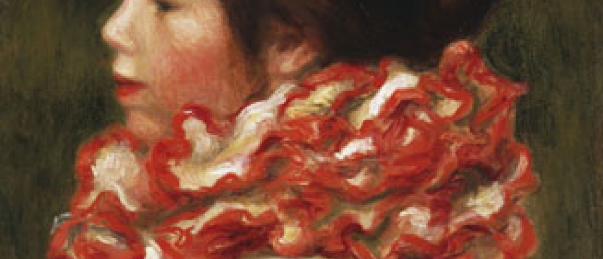

Renoir i wiek dwudziesty
„Zaczynam rozumieć, jak należy malować. Zabrało mi to ponad pięćdziesiąt lat życia, i nadal się uczę” — wyznał w roku 1913 Pierre-Auguste Renoir, w czasie, gdy paryska Galeria Berheim Jeune prezentowała wielką wystawę jego dzieł. Było to objawienie.
Guillaume Apollinaire nie szczędził pochwał artyście, którego uważał za „największego spośród żyjących malarzy”:
Renoir cały czas dojrzewa. Jego najnowsze płótna należą do najpiękniejszych. I najbardziej młodzieńczych.
„Nieprzemijająca młodość”, w istocie, by zacytować opinię Thadée Natansona z roku 1896, który był świadkiem prestiżu, jakim niezmiennie cieszył się Renoir w artystycznym świecie początku dwudziestego wieku. Malarz postrzegany był jako emblematyczny symbol impresjonizmu, wszak podziwiano go również za to, iż potrafił uczynić krok dalej i odnowić ruch artystyczny, który zyskiwał coraz szerszą akceptację. Podobnie jak współcześni mu malarze i przyjaciele — Paul Cézanne i Claude Monet — Renoir stał się punktem odniesienia dla nowego pokolenia artystów. Pablo Picasso, Henri Matisse, a także Pierre Bonnard czy Maurice Denis wyrażali swe uwielbienie dla mistrza oraz jego sztuki z okresu przełomu wieków. Wielbiciele sztuki nowoczesnej, jak Leo i Gertruda Stein, Albert Barnes, Louise i Walter Arensberg czy też Paul Guillaume, kolekcjonowali obrazy Renoira obok dzieł Cézanne’a, Picassa i Matisse’a.
Po okresie walki na rzecz impresjonizmu, około roku 1888 Renoir zmienił swe zasadnicze pryncypia i skoncentrował się na rysunku oraz pracy w atelier. Ów okres poszukiwań zakończył się w latach dziewięćdziesiątych dziewiętnastego stulecia, w dekadzie, która przyniosła artyście powszechne uznanie oraz sukces komercyjny. Nie odrzucając zdobyczy impresjonizmu, Renoir wykształcił styl, który sam uznawał za klasyczny i dekoracyjny. Jako „malarz figuratywny” Renoir skupił się na malowaniu aktów, portretów oraz studiów wykonywanych w atelier bądź w plenerze, a także eksperymentach z nowymi technikami. Będąc artystą odkrywczym i odważnie podejmującym wyzwania, Renoir pragnął skonfrontować samego siebie z wielkimi mistrzami przeszłości, jak Rafael, Tycjan czy Rubens, których dzieła podziwiał w Luwrze oraz w trakcie swych podróży. Jego poszukiwania inspirowało odrzucenie świata nowoczesnego i powrót do ponadczasowej Arkadii, zaludnionej przez zmysłowe Kąpiące się oraz wypełnionej atmosferą południowej Francji, gdzie malarz często pracował od roku 1890. Pejzaż śródziemnomorski postrzegał jako krainę antyczną, kolebkę oraz ostatnie refugium żyjących. Renoir uparcie powracał do wąskiej grupy tematów, które opracowywał w rozmaitych technikach, m.in. w rzeźbie. W pierwszej dekadzie wieku dwudziestego jego prace z modelami i z natury zaprowadziły go do nowych kompozycji, których ukoronowaniem stały się Odaliski oraz przede wszystkim Wielkie Kąpiące się z lat 1918-1919 (Paryż, Musee d’Orsay).
Czyż sam Renoir nie nazwał swych Kąpiących się „osiągnięciem” oraz „odskocznią ku przyszłym poszukiwaniom”? W ten właśnie sposób dzieło to było postrzegane przez rzesze francuskich artystów w początkach dwudziestego wieku, w kontrowersyjnym często kontekście rozwoju kubizmu i malarstwa abstrakcyjnego. Renoir odnalazł równowagę pomiędzy obiektywizmem i spojrzeniem subiektywnym, między tradycją i innowacyjnością, która doprowadziła do narodzin klasycznego modernizmu.
Renoir in the 20th Century
Galeries nationales (Grand Palais, Champs-Elysées)
23.09.2009 - 4.01.2010
Ekspozycja zorganizowana przez Réunion des musées nationaux, Musée d’Orsay oraz Los Angeles County Museum of Art, przy współpracy Philadelphia Museum of Art.